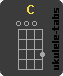
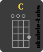

Chord Diagrams

 

Finger Position


Back To Top
The ukulele, popularized in Hawaii, is actually of Portuguese descent. Although it has only four nylon strings, versus the guitar's 6, songs can be played at all levels of complexity. Today, we will learn a very simple 3-chord song that, by learning it, will give you a way to touch and impress every friend or family member on their birthday! Also, you can apply the learning of these three chords on the ukulele to thousands of other songs!
To play "Happy Birthday" on the ukulele, you only need to learn three chords. For the diagrams below, the dots represent your finger placement for each chord. The left-most line of this diagram represents the "G" string on the ukulele, which is the string closest to your face while holding the ukulele as a right-handed player. For left-handed players, the left-most line would represent the string furthest from your face while holding the ukulele.
Strumming patterns can feel a bit like patting your head while rubbing your belly, at first. Luckily, this one is pretty simple.
The pattern goes like this: 1, and 2, and 3, and 4, and...(repeat).
With only your strumming hand (no chords!), play along with the video demonstration!
Well, everyone knows the lyrics and the tune of "Happy Birthday". So, now that we practiced the strumming pattern above, and we can see where each chord changes on each word, we can put it all together!
Be patient, it's harder than it looks at first, but once you get it, it's like riding a bike!
And now, I present, for the sake of getting a good grade in Web-Dev class, a small dose of embarrassing myself :)